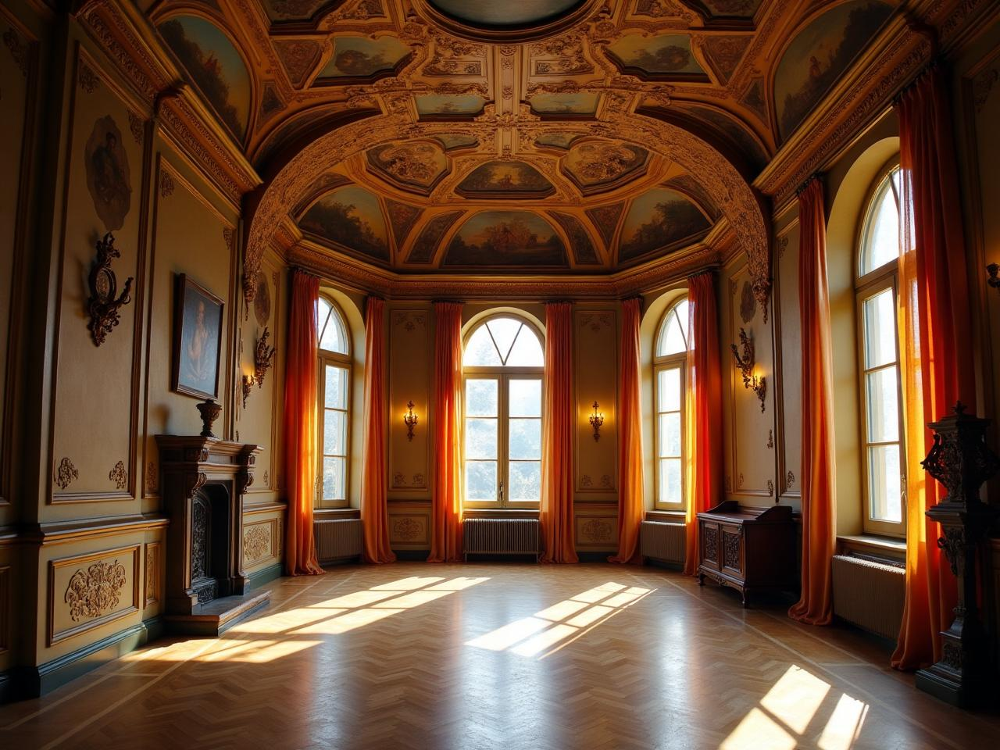
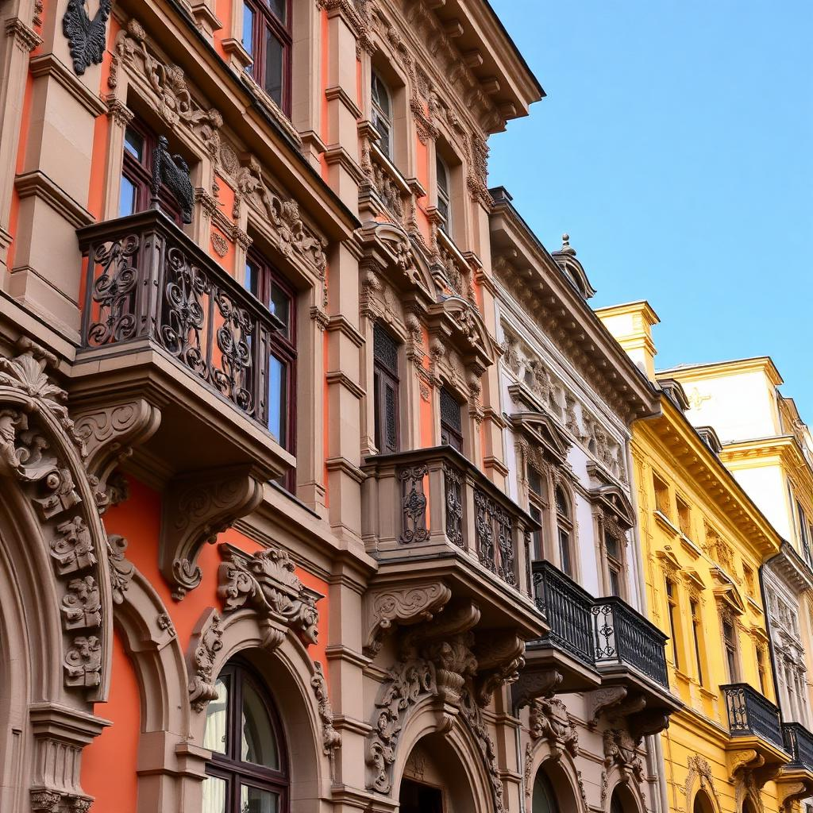
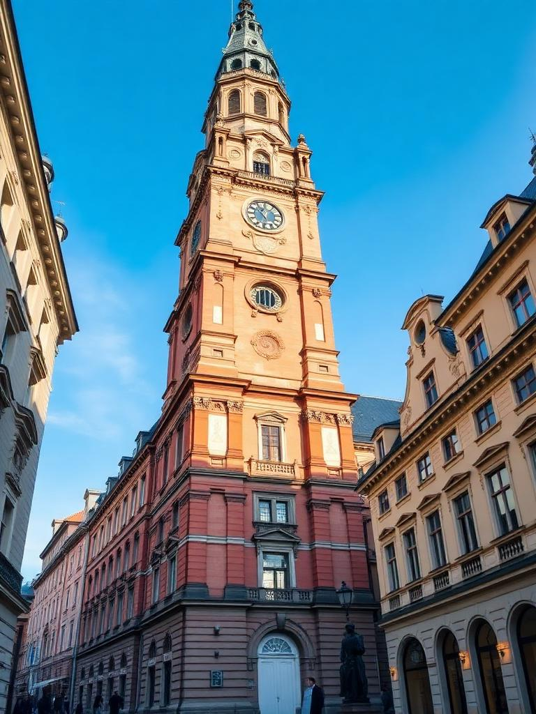
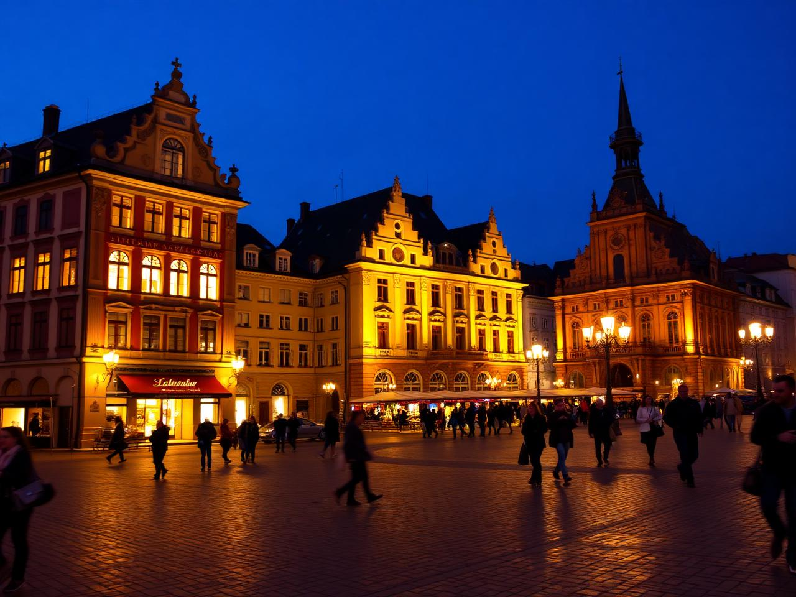
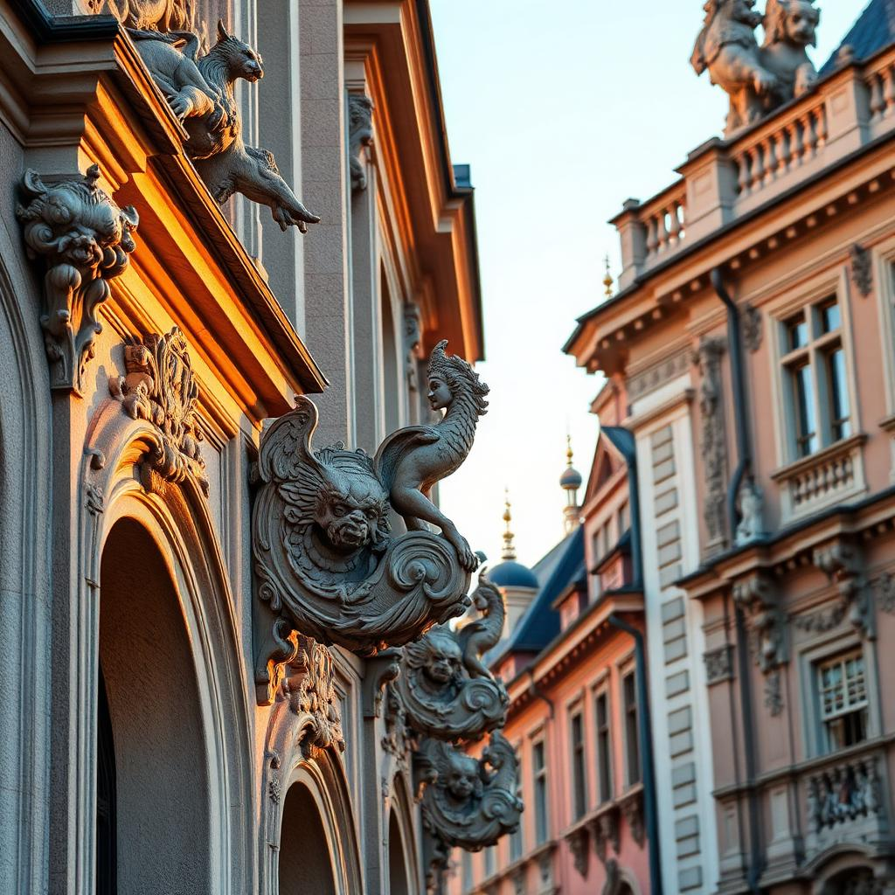
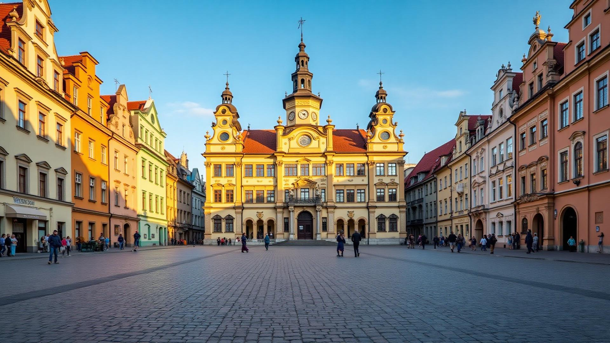

Серце історичного Львова — архітектурна перлина Ренесансу та Бароко
Площа Ринок — центральна площа Львова, яка формувалася з XIV століття та є найяскравішим прикладом середньовічного планування міста. Оточена 44 кам'яницями в стилі ренесансу та бароко, площа створює унікальний архітектурний ансамбль, що не має аналогів в Україні.
У центрі площі височіє ратуша — символ міського самоврядування. Кожна з кам'яниць має свою історію, легенду та архітектурні особливості, що робить площу Ринок справжнім музеєм просто неба.
Площа закладена за часів короля Казимира III Великого після надання Львову Магдебурзького права. Планування міста відповідало середньовічним європейським стандартам.
Площа стає центром міжнародної торгівлі. Тут розташовувалися лавки та складі найбагатших купців, велася жвава торгівля з Сходом та Заходом.
Дерев'яні будівлі замінюються кам'яними палацами в стилі ренесансу. Кожна родина намагається перевершити сусідів розкішшю фасадів.
Історичний центр Львова, включно з площею Ринок, внесено до списку Всесвітньої спадщини ЮНЕСКО як видатний приклад середньовічного міста.
Більшість кам'яниць побудовані в XVI столітті в стилі італійського ренесансу з характерними аркадами та декоративними фасадами.
У XVII-XVIII століттях багато будівель отримали барокове оздоблення з ліпниною, скульптурами та орнаментами.
Кожна кам'яниця унікальна: різьблені портали, балкони з кованими ґратами, алегоричні скульптури.
Центральна ратуша висотою 65 метрів з оглядовим майданчиком, збудована у 1827-1835 роках в класицистичному стилі.
Квадратна площа розміром 142×129 метрів з чотирма фонтанами по кутах, присвячених античним богам.
Багато кам'яниць мають внутрішні аркадні дворики-атріуми з галереями та колонами.

Найстаріша кам'яниця на площі (№ 4), збудована в 1588-1589 роках. Названа так через чорний камінь фасаду. Зараз тут розміщується Музей історії Львова з унікальними експозиціями.

Кам'яниця Корнякта (№ 6) з найвідомішим італійським двориком Львова. Збудована в 1580 році для багатого купця. Тристоронній дворик з аркадними галереями створює атмосферу Венеції.




| Параметр | Значення | Примітки |
|---|---|---|
| Заснування | XIV століття | За Казимира III |
| Розмір площі | 142 × 129 м | Квадратна форма |
| Кількість кам'яниць | 44 | По периметру площі |
| Висота ратуші | 65 метрів | З оглядовим майданчиком |
| Фонтани | 4 | По кутах площі |
| Статус ЮНЕСКО | 1998 | Всесвітня спадщина |
Маєте питання? Заповніть форму нижче